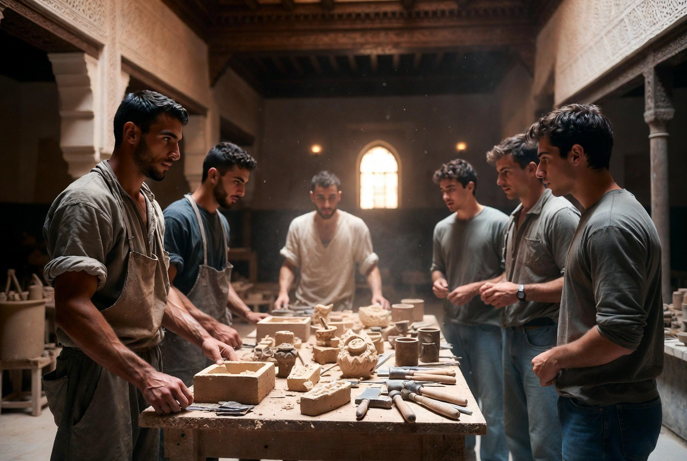

Charité & service
Ce que la maison reçoit, elle apprend aussi à le donner.

La formation reçue à Riad Al-Uns ne se mesure pas seulement à la main qui apprend un métier, mais au caractère qui se forge avec elle. Un homme capable de tailler le gesso ou de tracer une lettre coufique, mais incapable de se pencher vers celui qui a faim, n'a pas pleinement compris ce que la maison veut lui transmettre. Le service aux pauvres et aux jeunes en difficulté de la ville fait partie du rythme ordinaire de la communauté — non d'une initiative occasionnelle.
RYTHME
Un rythme, pas une exception
Aide alimentaire hebdomadaire aux familles nécessiteuses de Fès, intensifiée durant le Ramadan.
Lire →MÉTIER
La main qui donne
Une part du travail de Dar al-Hiraf, ou de sa vente, consacrée à l'assistance des plus pauvres.
Lire →ACCUEIL
Une porte entrouverte
Des jeunes de Fès en difficulté reçus, pour un temps, dans la vie et le travail de la maison.
Lire →UN RYTHME, PAS UNE EXCEPTION
Un engagement régulier

Périodiquement, un groupe de résidents se rend auprès de familles nécessiteuses de Fès pour leur apporter nourriture et assistance. Ce service suit le rythme hebdomadaire de la maison — lié en particulier au jour de la prière commune — et s'intensifie durant les périodes du calendrier islamique où la charité occupe une place centrale, comme le Ramadan. Ce n'est pas un projet social distinct, mais un prolongement naturel de la discipline quotidienne qui rythme déjà les journées du riad.
LE MÉTIER MIS AU SERVICE
La main qui travaille, la main qui donne

Une partie du travail produit à Dar al-Hiraf — une pièce tissée, un objet façonné — est périodiquement destinée à ceux qui en ont besoin, ou le produit de sa vente est consacré à l'assistance des plus pauvres. Ainsi le métier ne reste pas un savoir refermé sur lui-même : il devient aussi un service. On apprend à travailler de ses mains pour soi, pour le foyer que l'on fondera un jour, et pour celui qui n'a rien.
ACCUEIL DES JEUNES DE FÈS
Une porte entrouverte

Au-delà de l'assistance matérielle, la maison ouvre périodiquement ses portes à des jeunes de Fès en difficulté, les invitant à partager, pour une journée ou quelques jours, la vie et le travail de Dar al-Hiraf. Ce n'est pas de la bienfaisance au sens strict, mais un geste de transmission : offrir à celui qui n'y aurait pas accès autrement l'occasion de toucher un métier ancien, de s'asseoir à la même table, de se mesurer au même ordre et à la même discipline.
مَا نَقَصَتْ صَدَقَةٌ مِنْ مَالٍ
« L'aumône ne diminue jamais la richesse. »
— Rapporté par Muslim (Ṣaḥīḥ Muslim, 2588)
DISCRÉTION
Une continuité silencieuse
Le riad ne cherche pas de résonance pour ces gestes. Dans la tradition islamique, la charité (ṣadaqa, صدقة) trouve sa valeur précisément dans la discrétion avec laquelle elle est accomplie. Soutenir cette dimension de la vie de la maison, c'est soutenir non seulement la transmission d'un savoir artisanal, mais la continuité d'une éthique — celle de la futuwwa (الفتوة) — où le caractère d'un homme se mesure autant au soin porté à son métier qu'au soin porté à celui qui se tient à ses côtés.
SOUTENIR CETTE CONTINUITÉ
Nous écrire
Toute personne souhaitant s'associer à cette dimension du projet — de manière ponctuelle ou durable — est invitée à nous écrire.
Nous écrire →